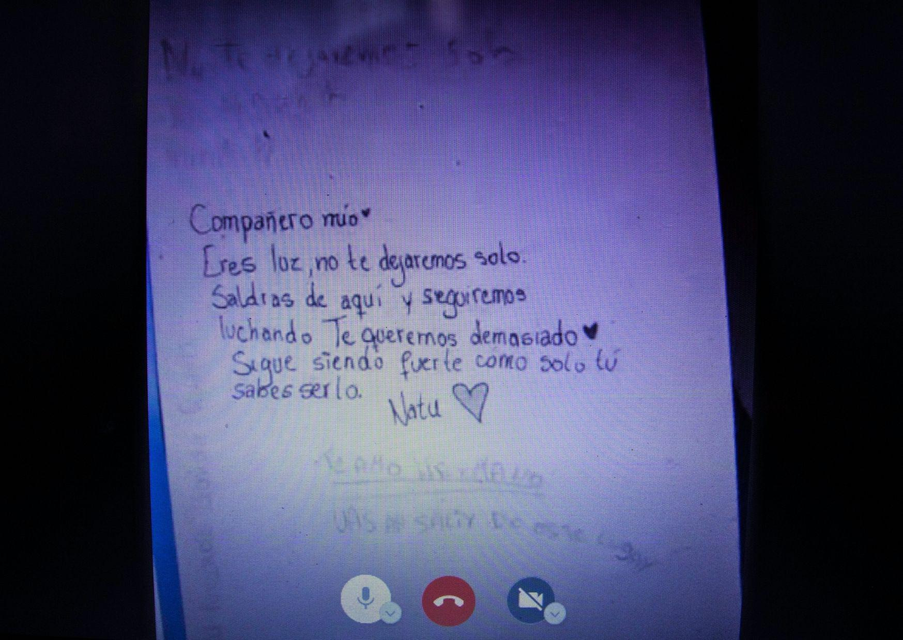

Estudiante secundario, residente de Quellón. Nos cuenta sobre su detención, posterior prisión preventiva y sus gustos, desde su casa y a pesar de los problemas de conexión y un incidente con “alguien” entrando a la entrevista, a través de la pantalla de su celular nos muestra pedazos de su cotidiano.
Estuvo 20 días en prisión preventiva por supuestos desordenes y agresión a una funcionaria de carabineros. Al momento de la entrevista está a la espera de una resolución para su caso.

¿Ahora cuál es tu situación judicial? ¿En qué está el proceso?
N: Se supone que ayer (8 de abril del 2020) iba a ser mi juicio, pero están aplazando todos esos trámites judiciales por el tema del coronavirus. Ahí voy a esperar que mi abogada me avise cuando se va a hacer al final.
Pero ¿ya no estás en arresto domiciliario nocturno?
N: No ya no, salí de eso. Fue como un día antes de que se empezaran a decretar las cuarentenas.
Queríamos saber un poco sobre tu actividad política en el movimiento estudiantil, como ha sido el movimiento estudiantil secundario en Castro, en Quellón, o donde tú te movilizabas.
N: Para empezar obviamente yo empecé acá en Quellón, el 21 de octubre si no me equivoco fue la primera marcha aquí en Quellón y fue gigante, o sea, para ser Quellón fue demasiada gente. El ambiente se sentía bacán, gente que pensaba igual a uno, que apañaba, así que ahí empezamos como a planear más cosas, hacer hartas asambleas y eso.
De ahí se hizo la primera toma de carretera, que fue en una carretera que da acceso a 3 plantas salmoneras, ahí estuvimos como alrededor de 10 días… armamos un campamento improvisado.
Lo que pasó esa vez fue que ahí tuvimos 2 atentados creo, en uno fue una camioneta blanca que pasó atropellando gente, así a lo loco y disparando… el copiloto estaba disparando con rifle a postones, a un cabro le llegaron 8 y a mí la camioneta me pasó como a atropellar con las barricadas porque fue a chocar la barricada y yo estaba en frente y me llegó a mi igual… fue una noche loca porque de ahí no dormimos más. Era un ex militar... lo loco de todo es que no hubo ninguna sanción para ellos.
Cuando llegamos donde los carabineros a poner una denuncia y todo, nosotros habíamos llamado a los carabineros que estaba pasando eso y los carabineros nos dijeron que nos dejemos de hueviar y que vayamos a acostarnos.
De la toma del cementerio (es la misma de la carretera que lleva a las salmoneras) nos desalojaron las fuerzas especiales, un día que eran como solamente 7 personas las que estaban ahí [...] fue como a las 8 de la mañana y yo justo había viajado a mi liceo, porque yo estudio en Chonchi.
Muy poca gente... ¿y tú estudiabas en Chonchi?
N: En el Instituto del Mar [...] ahí igual se tomaron el liceo. En mi liceo igual se hizo una toma de uno de los pabellones principales, dos veces, durante dos semanas seguidas, pero no continuas, sino que se tomó un día, al día siguiente…
El director amenazó a los cuartos medios que si no lo desalojaban le iban a quitar la gala y nos desalojaron, bruscamente y todo, incluso suspendió a caleta de cabros, entre esos estuve yo.
De ahí, después de eso, fui a una marcha en Castro que me invitaron, fui con amigos de Quellón y amigas. Fue un día en el que supuestamente dijeron que habían quemado el árbol de navidad de la plaza. Recuerdo que ese día se llevaron detenidas a 3 personas, dos chicos de Castro y un amigo que yo llevé de Quellón. Ahí me dijeron en el Liceo Politécnico (de Castro), en la toma que estaban haciendo ahí… me invitaron a quedarme a dormir esa noche y ahí me empecé a relacionar con los cabros, empecé a hablar con ellos, ver sus puntos de vista sobre la situación, así como retroalimentarse. Es bacán eso porque compartís con gente que está en las marchas, que piensa igual que uno, te ayuda a motivarte más.
Así estaba, marchando como acá en Quellón y en Castro, siendo como muy activo en el tema, hasta que el día 7 enero fue que pasó… cuando me llevaron detenido en una marcha que se estaba haciendo.

La detención
N: Estábamos manifestándonos en frente de la gobernación cuando llegaron los carabineros, los fuerzas especiales. Nos llegaron así a empujar a la vereda… Nosotros lo que hicimos fue irnos al semáforo y cuando llegamos al semáforo queríamos ganarnos la calle de vuelta y volvieron a llegar y nos volvieron a empujar a la vereda y ahí nosotros volvimos corriendo al frente de la gobernación y nos volvimos a ganar en la calle y allí ya llegaron los fuerzas especiales, pero directamente a atrapar gente.
Ese día recuerdo que corrimos, corrimos. Se pescaron como alrededor de 6 o 5 personas, entre esos yo no estaba. Yo me había ido. Soltaron como a 2, quedaron como 3 detenidos, los subieron a la micro de los carabineros, de la yuta.
Yo volví a reclamar que era una manifestación pacífica, que por qué los estaban llevando y eso po’, yo me puse a hablar en frente de ellos, de hecho, había mucha gente conmigo hablando en frente de ellos, gritando, exigiendo que los liberen. Y en eso me puse a caminar no más y me pesca uno por detrás, me empuja a la turba y ahí ya me pescan entre todos y me subieron. Al momento de subirme me tiraron al suelo, me pusieron rodillas encima, me pusieron las esposas. Un carabinero como que me pescó y me abrazó, me apretó fuerte, así como dejándome sin respiración y me dejó sentado. Ahí ya me llevaron junto a las otras 3 personas que habían detenido, que eran un cabro de 16 años, una cabra de 17 y otra chica de 21.
Recuerdo que ya, pasamos la noche en el calabozo, no fue mi mamá a verme, fue mi hermana, me fueron a dejar comida y cosas así. Al día siguiente tocaba la audiencia, en la audiencia yo fui el último en ir, primero pasaron los otros 3 chiquilles y después cuando me tocó a mi… a todos los liberaron, pero cuando me tocó a mí, ya me empezaron a meter supuestamente el cargo de que agredí a la funcionaria de carabineros, provocándole lesiones graves y ahí yo me fui a negro, porque quedé como ¿en qué momento? Pero yo no me iba a poner a alegar ahí en medio del juicio, o sea como estuve en todo momento así como super tranquilo, porque esperaba que, no sé po’, de alguna manera se solucione eso. Porque era estúpido, o sea una persona con dos dedos de frente, sabe que es muy difícil que yo, un cabro de 1 metro 63 le mande una patada a la altura del hombro a una carabinera, con un traje de especiales, resistente, con casco y todo y le provoque lesiones así po.
No sé, yo en mi mente, no sé… quedé impactado con esa acusación y después me dijeron eso de que iba a estar en prisión preventiva 90 días, porque me dijeron que iban a ser 90 días y ahí ya yo no me colapsé más que nada porque mi mamá estaba ahí en la audiencia igual y no quería que se preocupara mucho, si estuvo a punto de desmayarse.
Recuerdo que al momento de que el gendarme me puso las esposas y me llevó al calabozo de la fiscalía, me empezó a insultar, o sea me empezó a tratar de “gil culiao” que andaba puro hueviando y me empujó a una celda y me hizo sacarme toda la ropa, me hizo quedar en puros bóxer y después me hizo volver a ponerme toda esa ropa.
Después me trasladaron a la cárcel, a la CP. Me bajaron del furgón y un gendarme estaba llevando mi bolso con mis cosas, tenía ahí el lente de mi cámara, porque ese día yo estaba documentando en la marcha, un lente de mi cámara porque mi cámara y mi celular me los incautaron, así que me quedé con el lente y el cargador de la batería. Cuando llegué un gendarme pescó mi bolso, lo tiró unos 3 metros arriba y después lo pateó como unos 9 metros, lo pateó así y dijo “saquen esta hueá pa’ allá”, y yo quedé, así como... para la cagá, porque no sabía cómo reaccionar y estaba ahí en la cárcel ya, ya pasaba la gente al lado mío, me quedaban mirando.

Sobre la experiencia dentro de la cárcel
N: Tenía más o menos la idea en mi cabeza de que obviamente me iba a mantener alejado de los problemas, pero igual adentro había… al tiro conocí a un señor que me conocía a mi cuando yo era guagua, porque conocía a mi mamá y conoció a mi papá. El igual era de acá de Quellón y me dijo… como que se acercó a mí para poder, yo hacer que su hija lo pueda ir a ver, porque su hija es menor de edad, pero si iba con mi mamá con un permiso notarial, si iba a poder ir a verlo, así como que se empezó a acercar a mí, me empezó a brindar ayuda con cosas, me daba cosas, me dio champú, me dio un cepillo de dientes nuevo, me dio varias cosas como para estar los primeros días, ya después me llevaron cosas mis visitas, pero ese señor me ayudó, me apadrinó, no lo sé, era raro.
Igual con los cabros de la pieza me llevé bien. Era loco estar conviviendo con gente a la que uno no se atreve a preguntarle por qué cargos están ahí.
En la cárcel se aprenden muchas cosas, las jergas; por ejemplo, cuando nos llamaban a comer nos gritaban “ganchos” y todos salíamos, tenía ciertas dinámicas.
¿Puedes relatarnos cómo era un día en la cárcel?
N: Nos despertaban a las 8 de la mañana, nos daban el desayuno media hora después de despertarnos. Al desayuno, por lo general, cada uno debía tomar su taza, lavarla, servirse solo y te daban un pan. A la hora de almuerzo, como a las 10 de la mañana, te daban el almuerzo en una bandeja de metal; no me quejo porque la comida no era mala, después a la once nos iban a dejar a la celda una bandeja con panes y nos repartíamos entre todos, yo nunca tomaba once porque no me gustaban los panes. La cena, que era a las 15:30 pm generalmente la guardábamos en bolsa y la dejábamos para después, en las noches nos ingeniábamos para calentar la comida.
En ningún momento nos dejaban salir al patio, porque el patio era exclusivo para quienes ya estaban condenados.
Ni siquiera teníamos ventanas en nuestra celda. Esto era lo más agobiante de todo ya que perdíamos la noción del tiempo al no tener ventana, no sabíamos qué hora era. A veces me dormía a las 18 pm creyendo que eran las 22 pm o a veces me quedaba despierto hasta las 4 am.
¿Qué significa para ti haber sido/ser un preso político de la revuelta social en Chile?
N: Nunca me había planteado esa pregunta. No creo que signifique algo bueno, quizá en el contexto de caer por luchar; pero justamente eso es lo más fome, que metan presa a gente por estar luchando por un bien común. Sobre todo los montajes que hacen, a veces me pregunto si los carabineros son personas o no.
Sobre el estigma de haber estado preso
N: Al menos yo sé que acá en Chiloé la gente no pensaba, en general, que yo fuese lo peor, porque hubo entrevistas que me dejaron pésimo, pero a pesar de eso tuve apoyo de mucha gente y en general de toda la isla. En ese sentido tuve suerte, quizá de no haber sido por la presión social y la ayuda de organizaciones quizá todavía seguiría dentro cumpliendo prisión preventiva.